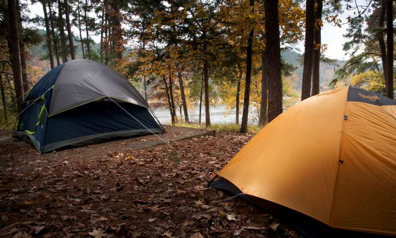
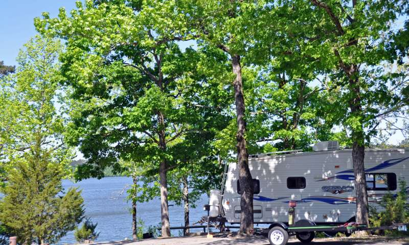
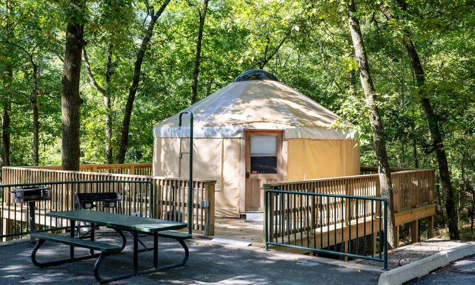

Tent Sites

Daisy State Park, nestled in the scenic Ouachita Mountains of Arkansas, offers a serene and rustic camping experience for tent enthusiasts. The park features several well-maintained tent sites, many of which are situated near the shores of Lake Greeson, providing campers with stunning waterfront views and easy access to fishing, kayaking, and swimming. Each tent site is equipped with a picnic table, a fire ring, and access to clean restrooms and shower facilities, ensuring a comfortable stay while still allowing visitors to connect with nature. The shaded areas and peaceful surroundings make it an ideal spot for families, couples, or solo adventurers looking to unwind under the stars.
Browsing options
RV Sites

For those traveling with recreational vehicles, Daisy State Park offers a variety of RV sites designed to accommodate different needs. The RV campground includes sites with full hookups, providing water, electricity, and sewer connections, as well as more basic options for those seeking a simpler experience. Many of the RV sites are spacious and level, making them suitable for larger rigs, and they are conveniently located near the park’s amenities, including restrooms, showers, and a dump station. With easy access to Lake Greeson and the park’s hiking trails, RV campers can enjoy the perfect blend of outdoor adventure and modern convenience.
Browsing options
Yurt Lodge

For a unique glamping experience, Daisy State Park offers cozy yurts that combine the comforts of home with the beauty of the outdoors. These circular, tent-like structures are equipped with comfortable beds, heating and air conditioning, and basic furnishings, providing a comfortable retreat after a day of exploring the park. Each yurt also features an outdoor picnic table and grill, allowing guests to enjoy meals amidst the natural surroundings. Situated in peaceful areas of the park, the yurts offer a tranquil escape
Browsing options